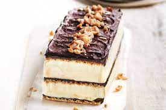

How to Make Frozen Caramel Slices
Estimated Time: 30 Minutes
Ingredients You Need
- 400g shortbread biscuits
- 80g unsalted butter, melted, cooled
- 1 cup (90g) desiccated coconut
- 1.5L caramel gelato or ice cream, softened
- 400g jar dulce de leche (from gourmet food stores)
- 200g dark (70%) chocolate, chopped
- 300ml thickened cream
- 1/4 cup (60ml) sunflower oil
Cooking Steps
- Grease the base and sides of a 5cm-deep, 20cm x 30cm lamington pan. Line with baking paper, leaving some overhanging.
- Place shortbread in a food processor and whiz to fine crumbs. Add the butter, coconut and a pinch of salt, and pulse to combine. Press into the base of the prepared pan, using the back of a spoon to smooth the surface.
- Spread over gelato, then dulce de leche. Smooth the surface, then freeze for 1 hour to firm up.
- Place chocolate in a heatproof bowl. Place cream in a pan over medium heat and bring to just below boiling point. Pour the hot cream over the chocolate and stir until melted and smooth. In 2 batches, stir in the oil until combined.
- Cool slightly, then pour over the slice and smooth the surface. Freeze overnight or until firm.
- Remove from freezer 20 minutes before serving. Using a warm knife, cut into pieces and serve immediately.